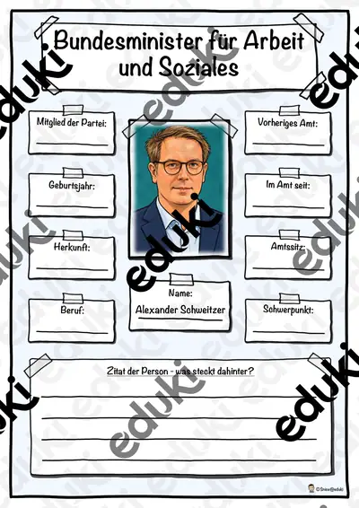
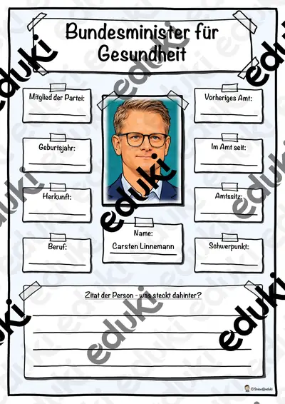
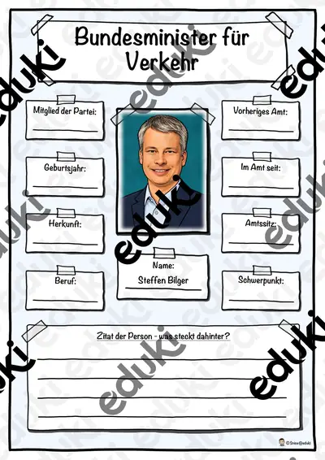

Landtagswahl Saarland 2022 - Steckbriefe Parteien
Mit diesem Material erhalten Sie 7 Steckbriefe zur verschiedener Parteien zur Landtagswahl 2022 im Saarland. Die Wahl zum 17. Landtags im Saarland wird am 27. März 2022 stattfinden.
Enthaltene Parteien in diesem Material:CDU SaarlandSPD Saarland
Bündins 90/Die Grünen SaarlandFDP Saarland
Die Linke Saarland
Die Partei SaarlandAFD Saarland
FachPolitik/Sozialkunde
KlasseKl. 5–10
SchulformSek I Mittlere Schulform
MaterialartMerkblätter
Ähnliche Materialien

Bundesminister für Arbeit und Soziales - Alexander Schweitzer

Bundesminister für Gesundheit - Carsten Linnemann

Bundesminister für Verkehr - Steffen Bilger

Chefin des Bundeskanzleramts - Nina Warken

Bundesministerin für Wirtschaft und Energie - Katherina Reiche

Bundestagswahl - Wahlprogramm der Partei Die Linke

Bundestagswahl - Wahlprogramm der FDP